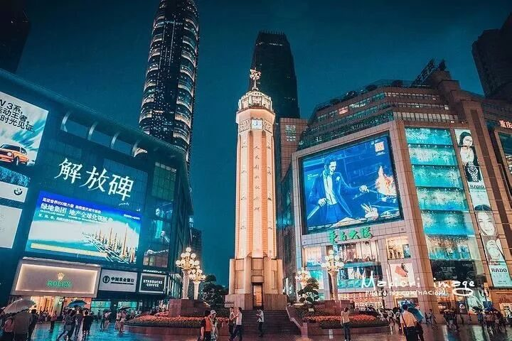
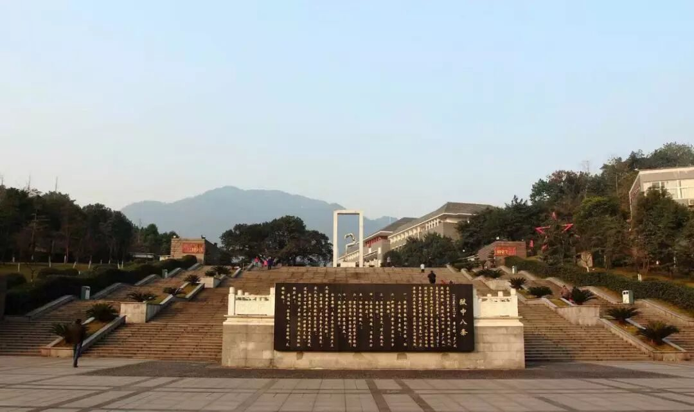
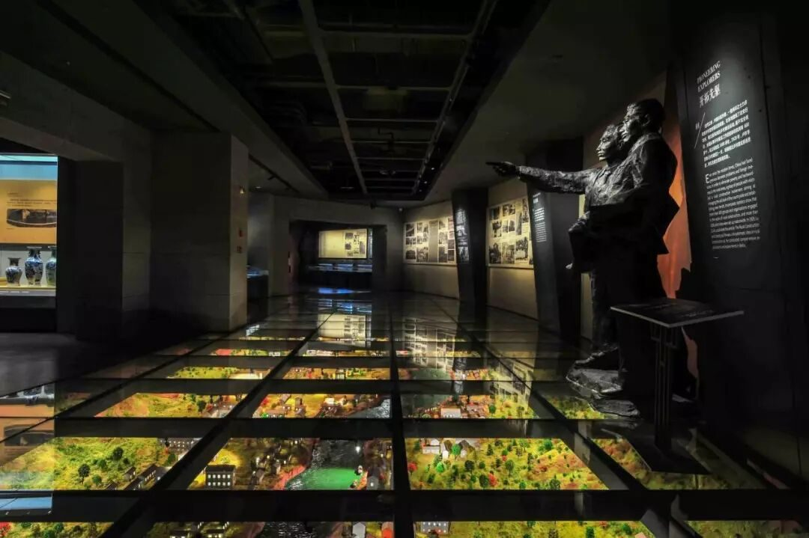
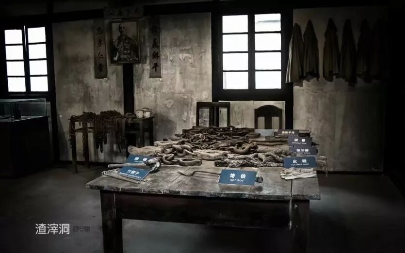
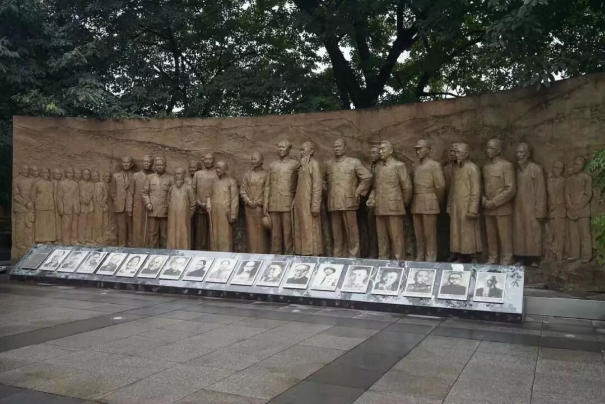

【行者无疆·源洄渝州】文化科普汇总-英雄文化（一）

源
洄
渝
州
行者无疆文化科普汇总
英雄文化(一)
重庆歌乐山烈士陵园
歌乐山烈士陵园坐落在重庆市西北郊区的歌乐山下，原是白公馆、渣滓洞集中营旧址，1984年改为沙坪坝区歌乐山烈士陵园。
重庆歌乐山烈士陵园是集雕塑、园林、陈列为一体的社会历史遗址博物馆。烈士群雕由438块红色花岗石组成，主题为“浩气长存”。群雕正面主题的是“宁死不屈”，体现了革命者视死如归的英雄气概。

北碚历史文化陈列馆
北碚历史文化陈列馆以历史时间轴为序，集中展现了自巴国到近现代2000余年的北碚历史。有巨石伸入嘉陵江中曰碚，又因在渝州之北故名北碚。
抗战时期，作为抗战大后方重要的迁建区，北碚热情地接纳了来自全国各地的文化科教名家，形成了三千名流汇北碚的壮观景象，成为了抗战大后方文艺创作与科学研究的高地。

渣滓洞集中营
在重庆市歌乐山麓，距白公馆2.5公里，一座由渣多煤少的小煤矿改建而成的集中营，因国民党特务在溃逃前夕策划的震惊中外的大屠杀而知名。以渣滓洞为原型，这里诞生了《烈火中永生》《红岩》《江姐》等可歌可泣的革命英雄故事。

红岩革命纪念馆
重庆红岩革命纪念馆是1945至1946年的中国共产党代表团驻地，在2006年，红岩革命纪念馆被评为全国十大红色旅游景区之首。
其陈列宣传展览主要以革命领袖、革命先贤、革命烈士的思想精神、人格风范为内容。体现的中华民族同舟共济、同御外侮、共赴国难的爱国主义和民族大团结的精神，不畏艰险的奋斗精神和勇于牺牲的奉献精神，都直接成为了红岩精神的思想来源。

解放碑
抗战胜利纪功碑暨人民解放纪念碑，简称“解放碑”，位于重庆市渝中区解放碑商业步行街中心地带，是抗战胜利的精神象征，是中国唯一一座纪念中华民族抗日战争胜利的纪念碑，也是重庆解放及重庆市的象征。
来源丨行者无疆实践团
文字丨张锐
排版丨陈嘉颖
审核丨邓子孚 段智然
行者无疆实践团
QQ：2758025831

随行者一起认识世界
长按二维码关注